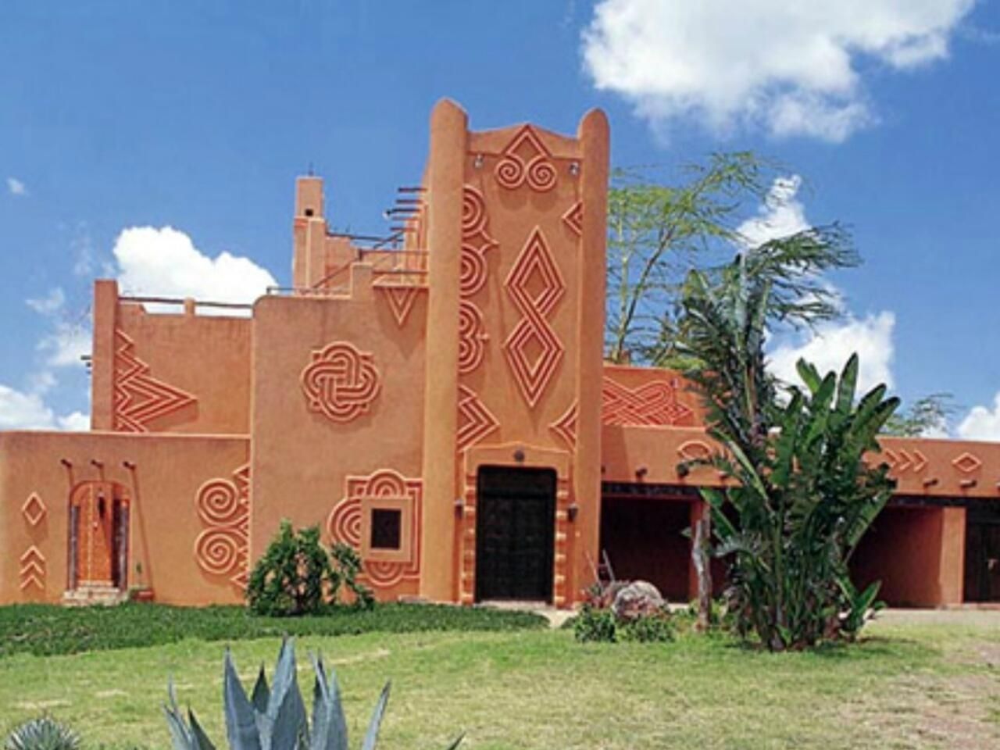
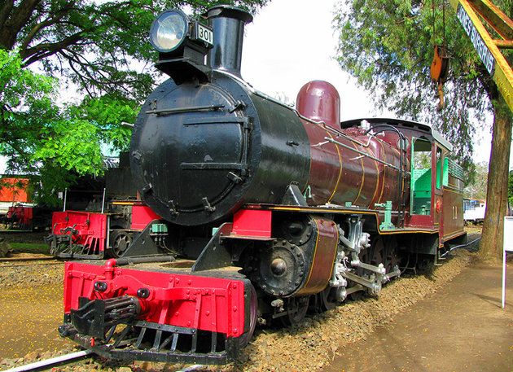
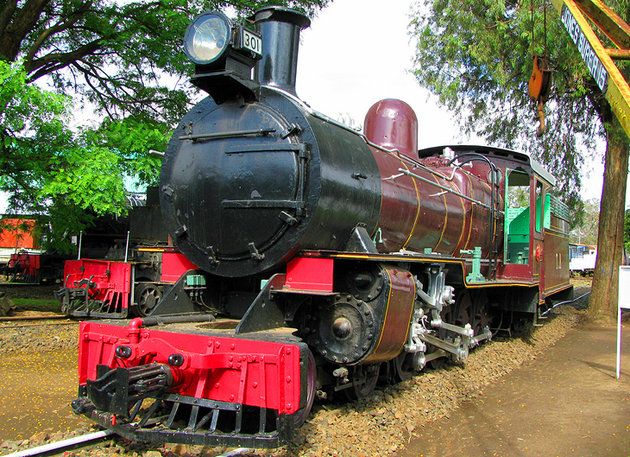

SITUATION GEOGRAPHIQUE
Altitude 1 661 m
Superficie 69 600 ha = 696 km2

Nairobi en tant que ville doit son existence à la compagnie de chemin de fer Kenya Uganda Railway, reliant l'Ouganda et le Kenya. George Whitehouse prit la décision de déplacer le siège de la compagnie de Mombasa à Nairobi2.La ligne atteignit Nairobi en 1899 et l'ingénieur en chef, Sir Cette décision fit très vite de Nairobi un nœud commercial et d'affaires du protectorat de l'Afrique orientale britannique de l'époque
Altitude 1 661 m
Superficie 69 600 ha = 696 km2
Gentilé Nairobien/ne 1
Population 4 734 881 hab. (2020)
Densité 6 803 hab./km2
La Maison du patrimoine de Nairobi, bâtiment réputé le plus photographié d’Afrique, est un lieu d’échange et un musée de merveilles antiques qui témoignent du passionnant passé du pays.

Le Nairobi Railway Museum est un musée ferroviaire situé à Nairobi, au Kenya, à côté de la gare de Nairobi. Contenant des expositions des défunts chemins de fer d’Afrique de l’Est, il a été ouvert en 1971 par la Société des chemins de fer et des ports d’Afrique de l’Est. Il est exploité par Kenya Railways.
 

- Le foot : comme partout dans le monde, le football déchaîne les passions, même les habitants de la nairobi n ont jamais brillés . - La course à pied :la nairobi compte d'extraordinaires coureurs de demi-fond et de fond, souvent originaires de Kabarnet où le relief et le climat les forgent à l'endurance.